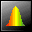

DataPlus
A BeOS Application For Data Analysis
DataPlus is an application for the statistical and visual analysis of scientific data. It allows the detailed examination of relationships among elements within and across sets of scientific data by the use of interlinked statistical tables and graphs. It was originally designed for the analysis of medical laboratory data, but it will serve equally well in any other discipline.
The BeOS implementation offers a unique way to assemble what amounts to a series of interacting statistical tools, all of which can modify the data of the others. For example, if a data point is removed, altered or marked in one graph or table, any other table having that point will also reflect the change. This powerful capability allows the user to visually and statistically see how one variable is associated with another, which can create unexpected insights into the data.
Organization of DataPlus and its Tools
DataPlus Console - The central application:
The suite of applications is organized around this central data set manager. Data sets are opened or created using this central application, and once the data fields of interest are selected, one of several tools can be launched which analyze or modify the selected data.
The data analysis tools are:
 Distribution Analysis
This gives a distribution plot and both the parametric and non-parametric distribution statistics of a single field within the data sets.
2-D Plot & Regression Analysis:
This tool shows a scatterplot and linear regression analysis of the data sets chosen. It supports multiple sets/graph, with the ability to change the plot symbols and colors. Data points can be selected by the mouse for marking or editing. Regression statistics such as slope, SD slope, intercept, SD intercept, standard error, Pearson's r-value, t-value and p-value are given.
Polynomial Regression Analysis
This is similar to the linear regression analysis except that the data is fitted to a polynomial regression. The order of the fit can be selected, and fitting data such as parameter coefficients and chi-square value are given.
Multiple-regression Analysis
This generates a table which examines the statistical relationships among all of the data sets. Regression, population and other statistical data can be shown for each set intersection.
3-D Plotting and Analysis
This plots and analyzes the relationships between three variables. The plot may be rotated in three dimensions to visualize the data, and cluster analysis allows the separation of related data.
Matrix Sorting
This is a unique tool which allows complex boolean sorts on the data sets, where data may be included or excluded on any number of user-defined criteria. The result is a series of data sub-sets which may be separately analyzed.
Formula Modifier
This allows fields to be created or modified based upon the mathematical manipulation of other fields or results. Free-form formulas may be entered and then applied to the entire data set or to selected subsets. For example, a new data field may be created which is the sum of fields #1 and #6 divided by the inverse log of field #2 and the sine of a fixed number.
Data Editor
This allows the creation or modification and direct editing of data fields. It is similar to a spreadsheet but allows the creation of specialized data types. Data may also be extracted from text files or Gobe Productive spreadsheets.
Disclaimer:
This is software, and as such, it will contain at least one bug, no matter how hard I try. The algorithms and their implementation are believed by the author to give accurate results, but NO GUARANTEES are offered. Users assume all responsibilities for their use of this application, and the author is not liable for any direct or consequential damages from the use of this software.